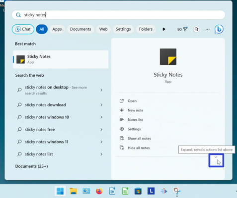
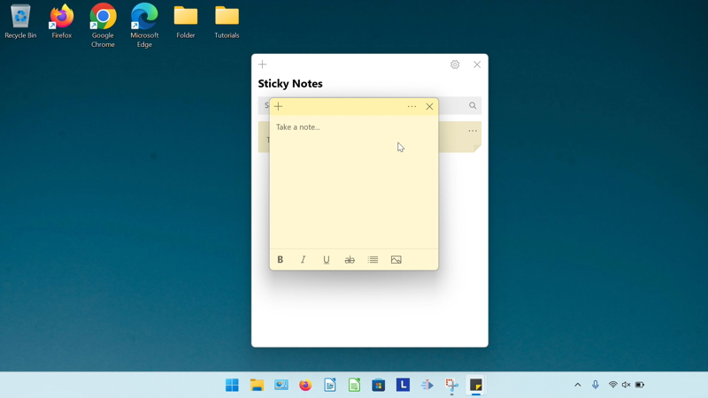
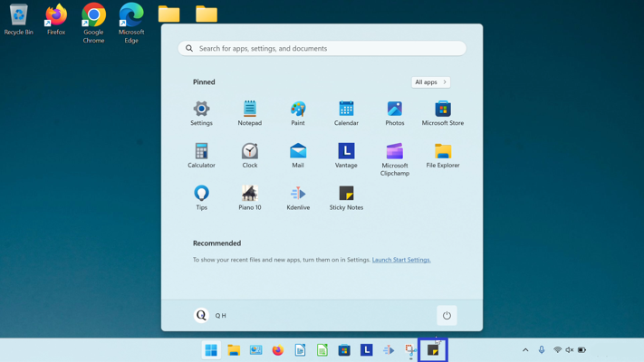
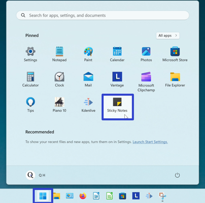

How to Pin the Microsoft Sticky Notes App
This tutorial covers:
How to Pin the Sticky Notes App:
No time to scroll down? Click through this tutorial presentation:
Follow along with a tutorial video:
How to Pin Sticky Notes to the Taskbar With Search
- Step 1: Go down to the taskbar and click Start (four blue squares).

- Step 2: In the Start window that opens, click the top search bar and type “sticky notes”.

- Step 3: On the search results screen, click the down arrow to expand the menu. 
- Step 4: Click “Pin to taskbar”.

- Step 5: Go down to the taskbar and click the pinned Sticky Notes app icon.
- The Sticky Notes app opens. 
How to Pin Sticky Notes to the Taskbar With Right Click
- Step 1: First open the Sticky Notes app. Go down to the taskbar and right click the app icon.

- Step 2: In the menu that opens, click “Pin to taskbar”.
- Step 3: Right click the pinned Sticky Notes app icon.

- Step 4: In the menu that opens, click “Sticky Notes” to open the app.

- The Sticky Notes app opens.
How to Pin Sticky Notes to the Taskbar From Start
- Step 1: Go down to the taskbar and click Start (four blue squares).
- Step 2: In the Start window that opens, right click the pinned Sticky Notes app icon (if Sticky Notes is not yet pinned to start, see the last section).
- Step 3: In the menu that opens, click “Pin to taskbar”.
- The pinned Sticky Notes app icon appears on the taskbar. 
How to Pin Sticky Notes to Start
- Step 1: Go down to the taskbar and click Start (four blue squares).
- Step 2: In the Start window that opens, click the top search bar and type “sticky notes”.
- Step 3: On the search results screen, click the down arrow to expand the menu.
- Step 4: On the search results screen, click “Pin to Start”.
- Step 5: Click the Start button twice, and in the Start window that opens, click the pinned Sticky Notes app icon. 
- The Sticky Notes app opens.
Download a free tutorial PDF.